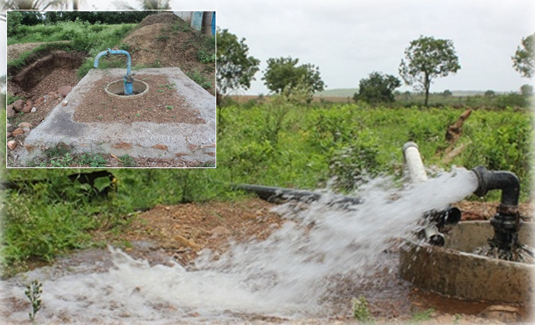

BORE WELL MANAGEMENT

A water well is an excavation or structure created in the ground by digging, driving, boring, or drilling to access groundwater in underground aquifers. The well water is drawn by a pump, or using containers, such as buckets, that are raised mechanically or by hand.
Wells were first constructed at least eight thousand years ago and historically vary in construction from a simple scoop in the sediment of a dry watercourse to the step wells of India, the qanats of Iran, and the sadhus and sheikhs of India. Placing a lining in the well shaft helps create stability and linings of wood or wickerwork date back at least as far as the Iron Age.